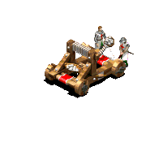
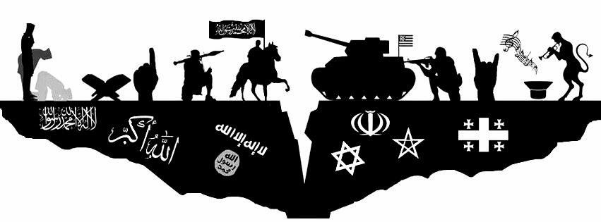

Civilizaciones
En Age of Empires II: The Age of Kings, el jugador puede elegir entre 13 civilizaciones. Cada una tiene un perfil diferente, con fortalezas y debilidades propias basadas en el modelo real de las civilizaciones. Cada civilización tiene también una unidad única y guerreros con nombres más o menos históricamente precisos. Las civilizaciones, ordenadas según sus estilos arquitectónicos, son las siguientes:
Bizantinos
El Imperio Bizantino eran una civilización de Europa del Este, situado en Asia occidental a lo largo de la costa oriental del Mediterráneo, extensión del Imperio Romano de Oriente. Aunque los Bizantinos se consideran a sí mismos como más griegos que romanos, conservan muchas características del clásico Imperio Romano, tales como su unidad única, la catrafacta, un tipo de caballería pesada que pasó a estar presente en Age of Empires I. La Catrafacta es una de las pocas unidades de daño verdadero contra la infantería. Sin embargo, es ligeramente más débil que los Caballeros. Su tecnología única es Logistica, en referencia a las fuertes tácticas militares Bizantinas , que otorga a sus Catrafactas la habilidad de hacer daño extra al atacar a varios enemigos a la vez.
Los Bizantinos tenían una ventaja sobre sus vecinos europeos , mientras que el resto de Europa se encontraban en la Edad Oscura. Como resultado, ellos pagan menos para avanzar a la Edad Imperial. Los bizantinos fueron más conocidos por haber desviado muchas invasiones realizadas por los bárbaros, eslavos y árabes , las paredes se famosas que rodean su capital de Constantinopla se mantuvo de pie durante más de un milenio, hasta que fueron invadidos por los turcos otomanos. Debido a la realización de muchas de las tradiciones de Roma como su destreza naval y de ser los inventores del fuego griego, un antiguo fuego rumoreado para ser capaz de inflamar incluso en el agua, ademas sus barcos de guerra atacan más rápido. Como una civilización defensiva, también reciben unidades de venta más baratas y actualizaciones de ciudad de forma gratuita. Al ser el bastión de la ortodoxia griega, los Monjes curan más rápido para mantener con su tema defensivo.
Chinos
Los chinos fueron una civilización de Asia Oriental sobre la base de las dinastías Tang y Song de la China medieval. Los chinos fueron más conocidos por sus innovaciones tecnológicas sin precedentes y ciudades altamente pobladas que pueden acomodar a millones de personas por el año 1200, siendo el más grande de Hangzhou.
Para reflejar este logro y por ser una de las civilizaciones que sufrieron al menos durante la Edad Media, comenzarán con aldeanos extra al iniciar el juego y sus centros urbanos tienen a una población mayor. Aunque tienen menos recursos al iniciar, granjas aliadas producen alimentos extra.
La unidad única de los chinos es el Chu Ko Nu, un arquero de pie empuñando la ballesta semi-automática del mismo nombre inventado por los chinos que carga un nuevo perno simultáneamente tan pronto como el último fue lanzado. Chu Ko Nu dispara múltiples flechas a la vez y, si se emplea en masa, pueden causar estragos en la infantería y la caballería. Su tecnología única es llamada Cohetes, refleja su descubrimiento de la pólvora. Parece que los chinos en Age of Empires II tienen una comprensión más cruda de la pólvora, como "Cohetes" beneficia a sus Escorpiones de asedio y su Chu Ko Nu dándoles mayor daño en lugar de beneficiar a cualquiera de sus unidades de pólvora que no están disponibles para ellos. Para reflejar los usos del cañón de pólvora, sus buques de demolición toman más daño para una mayor destruccion y por lo que pueden llegar a sus objetivos más fácil. Por último, la investigación china hace que todas las tecnologías sean más baratas que cualquier otra civilización debido a ser una de las civilizaciones más avanzadas en la Tierra durante el plazo de Age of Empires II.
Celtas
Los celtas eran una civilización de Europa Central que dominó gran parte de Europa, como Polonia, Alemania, España, Francia y las Islas Británicas. Los celtas en Age of Empires II son los celtas de Escocia, Irlanda y Galos en Europa Occidental. Su unidad única es el Invasor de pastos, un tipo de infantería que se cubre con pintura hecha a partir de la planta de hierba pastel para parecer más temible. Los Invasores de pastos corren muy rápido, lo que les permite superar las debilidades normales de infantería frente a los arqueros y armas de asedio.
Su tecnología única es Furor Celta, que se refiere a la tradición céltica del guerrero de canalizar sus emociones y la ira.Asi hacen que sus armas de asedio sean más difíciles de matar. A causa de su madera histórica y metalurgia, sus Talleres de asedio construyen más rápido, sus leñadores trabajan más rápido, y sus armas de asedio disparan más rápido. Al igual que sus vecinos los Ingleses, los Celtas eran pastores históricamente calificados, por lo que es mucho más difícil para los enemigos robar sus ovejas.
Francos
Los Francos fueron una civilización europea occidental que aparece en la Era de los Reyes, históricamente descendientes de galos. Tienen una unidad de infantería para su unidad única: Los lanzadores de hacha lanzan sus hachas a los enemigos en un rango corto, haciendo daño de contacto en lugar de perforar como arqueros. Lanzar hachas era más popular que los arcos en las partes densamente arboladas del norte de Europa de donde los Francos provienen, y que incluso toman su nombre de su hacha de lanzar, la Francisca.
Su tecnología única es el Hacha de batalla para reflejar esto, les da a sus Lanzadores de hacha más rango. Los Francos podrían ser vistos como la civilización medieval arquetípico. El rey Franco Carlomagno inició la tradición de usar caballería blindada que se hizo conocido como Caballeros , estos luchan valientemente con más HP(vida).
Godos
Los godos eran una civilización de Europa del Este conocidos por traer de Roma a sus rodillas y viajar por toda Europa, con lo que la devastación con ellos era terrible.Los huscarles, era la unidad única de estilo godo. A medida que los godos eran conocidos por su destreza incursiones, los medio de infantería huscarles tienen una armadura de cota muy dura y hace caso omiso de los daños causados por fortificaciones o flechas. Esto los hace muy poderosos contra los arqueros, y también se mueven lo suficientemente rápido para perseguirlos.
Los godos eran conocidos como los nómadas flexibles con el gobierno formal, sobre todo inexistente, por lo que su anarquía de tecnología única permite a los huscarles ser entrenados en el cuartel de la infantería tan pronto como alcances la Edad de los Castillos. Perfusión es su tecnologia unica y les permite entrenar infantería extremadamente rápido. A medida que los godos eran conocidos por ser capaces de generar muchos soldados en masa rápidamentes.Su infantería cuesta menos y sus cuarteles producen más rápido sus unidades. Como son infanteria, consiguen ataque extra contra edificios. Siendo nómadas les dieron otras ventajas, y sus habitantes pueden cazar con mayor eficacia y llevar más carne. Por último, los godos obtienen un límite de población más alta que otras civilizaciones para reflejar su capacidad de ejércitos obtenidos rápidamente.
Ingleses
Los Ingleses son una civilización de Europa occidental que aparece en la Era de los Reyes. Su unidad única es el Arquero de tiro largo, de su uso histórico de los Arqueros en sus campañas. Arqueros tiro largo son arqueros con mayor ataque y alcance que cualquier otro arquero en el juego, incluso atacando castillos y torres desde gran distancia en el juego. Su "Dinastia" (tecnología única) referencia al hecho de que los Ingleses en gran medida se basaron en el tiro con arco, dando así a sus arqueros a pie aún más variedad, así como aumentar su daño torre y alcance.
Los Ingleses eran conocidos por sus pequeñas aldeas dispersas a través de Inglaterra, así como sus tácticas de invadir enemigos con fortalezas y así conseguir centros urbanos más baratos. Conocidos como pastores calificados y muy involucrados en el comercio de la lana, los pastores Ingleses trabajan más rápido.
Sin embargo, su falta de acceso a los paladines o Húsares los pone de nuevo en términos de caballería, lo que significa que la infantería esta fuera de su alcance.
Japoneses
Los japoneses son una civilización de Asia Oriental en la isla de Japón. Los japoneses eran pescadores de renombre, se refleja en el hecho de que sus barcos de pesca son más rápidos y más duros. Su unidad única es el Samurai, un tipo de movimiento rápido de infantería fuerte contra otras unidades únicas. El samurai era la clase de élite en la sociedad japonesa, y requirió decenas de años de entrenamiento.
Los samurai estaban armados con una Katana y un espada larga hoja delgada extra-fuerte, un Wakizashi, una versión más corta de la Katana y a veces un TANTO mas filosa. Estos soldados servidos al Señor ,lucharon por ellos basados en el código de honor Bushido el cual era bastante estricto y si no, iban a realizar hara-kiri que era un ritual en el que se suicidaban.
Los japoneses también eran conocidos por trabajar la madera y la minería. Los japoneses se basan en la infantería y la guerra naval, pero no tanto en su caballería.
Mongoles
Los mongoles eran una civilización asiática oriental conocido por ser el país más grande contiguo en la historia humana. Los mongoles fueron ligeramente similares a los hunos , pero tuvieron muchas diferencias importantes . Los mongoles tenían excelentes jinetes y arqueros que fueron la clave de su éxito . Su unidad única es el Mangudai , un tipo de arquero caballería, demostrando una vez más la superioridad de los mongoles en la caballería.
Los Mangudai son más fuertes que la caballería pesada de arqueros en todos los sentidos , y cuesta menos en términos de oro , pero más en términos de madera. Los mongoles tienen una caballería fuerte, con disparo rápido de arqueros a caballo ,tienen unafuerte Caballería Ligera y Húsares.
Persas
Los persas eran una civilización de Oriente Medio Asia basado en el imperio sasánida . Fueron notables por su rivalidad con el Imperio Romano y la absorción gradual en el califato islámico tras el surgimiento del Islam y las invasiones árabes. Al igual que su predecesor en el juego original , los persas tenían una fuerte caballería y marina .
Además , tienen una bonificación para los Centros urbanos y los muelles de la ciudad. La unidad única persa es el elefante de Guerra , un tipo de caballería muy pesado. El elefante de guerra puede acabar con varias unidades de caballería e infantería e incluso soportar el fuego de asedio. El elefante de guerra es fuerte contra los edificios , pero su defecto es arqueros y lanceros .
Sarracenos
Los sarracenos eran una civilización de Oriente Medio de la zona de la Península Arábiga (Predominantemente Arabia Saudita y Yemen) y Siria. Ocupaban uno de los territorios más grandes durante ese tiempo hasta que las invasiones de los mongoles llegaron. Para reflejar sus logros como una poderosa civilización del desierto y de la fundación de una de las principales religiones del mundo, sus tecnologías únicas benefician a sus monjes y unidades de camellos entre ellos el Mameluco (Su unidad unica). También tienen una pequeña ventaja cuando se trata de buques.
Su unidad única es el mameluco, un tipo de caballería ligera en camello con un gran bono de ataque contra la caballería, pero capaz de derribar a los arqueros y la infantería ligera, así. Los sarracenos eran también comerciantes activos, están ubicados en la encrucijada del mundo, que era un centro principal para el comercio mundial. Como resultado, tienen una ventaja cuando se trata de comercio, ya que su costo de negociación en el mercado es solamente 5% de interes, que es mucho más pequeña que otras civilizaciones.
Teutones
Los teutones eran una civilización centro-Europea conocidos por su trabajo en equipo y una fuerte infantería. Tienen muchos buenos bonos como: Los monjes pueden curar durante más tiempo , torres guardan el doble de unidades , granjas cuestan menos , Centros urbanos sono significativamente más fuertes , y las unidades son más resistentes a la conversión.
Su unidad única es el caballero de la orden teutonica , la unidad de infantería más fuerte en el juego . El Caballero de la orden teutonica de Elite puede acabar con casi cualquier unidad que se acerca demasiado. Su movimiento es extremadamente lento . También tienen fuertes Paladines , pero también son lentos en comparación con otras civilizaciones , ya que carecen de Ganado .
Turcos
Los turcos eran una civilización de Oriente Medio , se originaron en Asia Central sobre la base de los turcos otomanos . Los turcos fueron conocidos por haber ganado muchas batallas en las Cruzadas , así con éxito Constantinopla que terminó como punto de apoyo europeo para la Ruta de la Seda y el contacto con el Oriente .
Los turcos minan el oro más rápido. También utilizaron la pólvora con bastante eficacia , convirtiéndose en el primer "imperio de pólvora". Para reflejar sus logros , tienen una actualización gratuita para utilizar unidades de pólvora , y unidades mas fuertes de pólvora que cuestan aún más baratas que en otras civilizaciones. Las unidades de pólvora se crean también más rápido. Su unidad única es el Jenízaro , un tipo de unidad de pólvora con un rifle. El jenízaro es fuerte contra la infantería y arqueros . Los turcos también tienen algunas mejoras en caballería gratuitas y mineros de oro más rápido
Vikingos
Los vikingos eran una civilización europea del Norte más conocidos por ser marineros, por lo cual establecieron colonias en el Atlántico Norte en Groenlandia y Canadá antes que los exploradores europeos. También eran conocidos por traer temor entre varias comunidades europeas, ya que asaltaban pequeños pueblos inesperadamente. Como resultado, su marina y la infantería se encuentran entre los mejores en el juego y son una de las pocas civilizaciones que tienen más de una unidad única.
Los vikingos usaban cascos de pinchos o cuernos, pero se abstuvieron de cortar su pelo y el vello facial para dar la apariencia de una bestia grande, de miedo, y peludo. Esto se refleja en su unidad única, el Guerreo en Trance y su tecnología exclusiva que beneficiaría a ellos. El Caballero en Trance es una unidad de infantería extra-fuerte, regenerandose rápidamente, fuerte contra otras unidades de infantería y caballería ligera, y en una medida contra los edificios.
Los vikingos también se destacan en la guerra naval y la táctica, e incluso dominar el arte de varios tipos de navegación. Para reflejar este logro, su unidad única es el Barco Tortuga, un tipo de barco de guerra rápida que dispara muchas flechas a otros barcos.